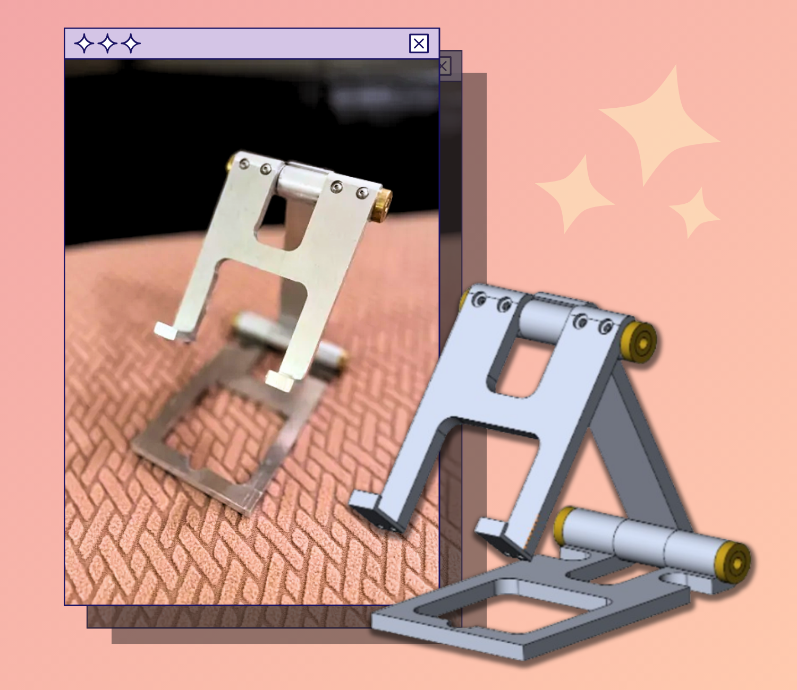
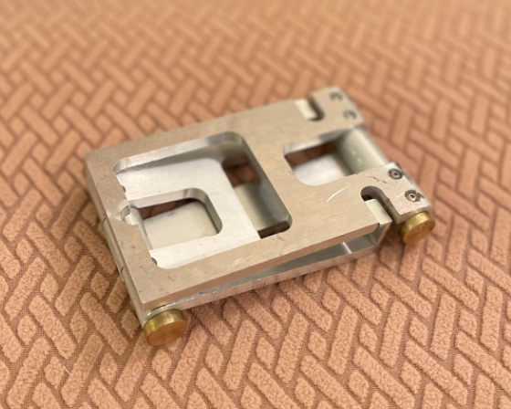
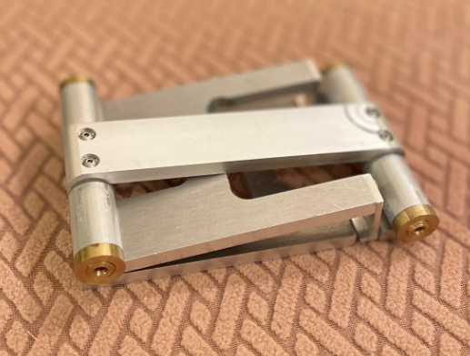
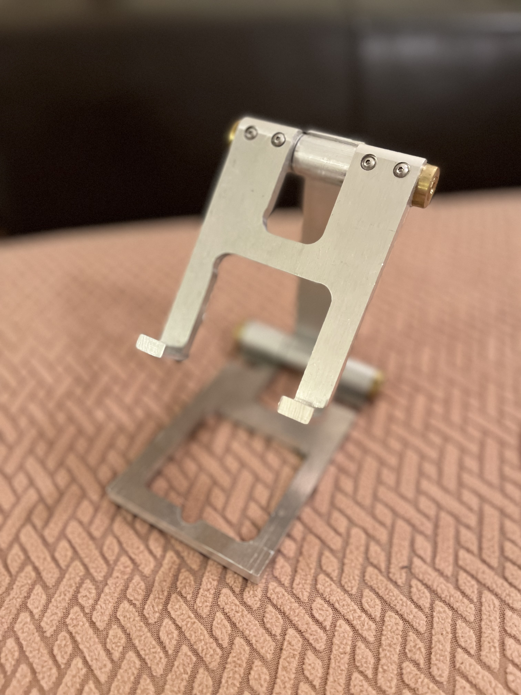

Skills: Machining; Waterjet Cutter, Mill, Lathe, Drill-press

SMS Course
During my coop term in 2023, I took the Student Machine Shop course at UBC, consisting of 10 sessions across 3-4 months, each session being 3-4 hours of instruction and shop-work. In this time, I learned the following (list as written on the course site) :
- Safety rules and machine tool fundamentals
- Measuring, drawing, hand tools, drill press, tap and drill
- Basic lathe, facing, turning, threading with die, etc.
- Basic milling, edge finding, automatic feed, drilling, etc.
- Waterjet cutter, grinding lathe tool bits
- Lathe techniques and machining strategies
Throughout each module, we constructed part of a phone stand (CAD model details were provided to us), gaining hands-on experience with the machinery and processes that comes with manufacturing simple designs like this. The end product was an adjustable phone stand that is probably more durable than anything else on the market and weighs quite a bit (and it folds up!). That, and of course, beginner knowledge/familiarity with common machine-shop tools like the lathe, mill, and waterjet cutter.


